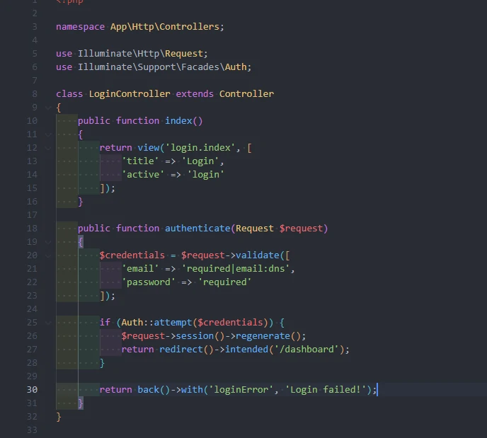
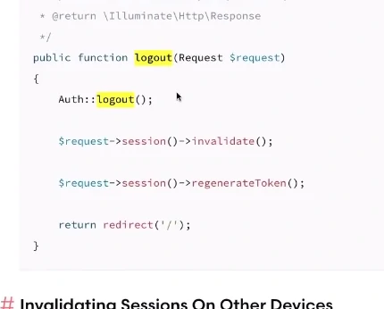
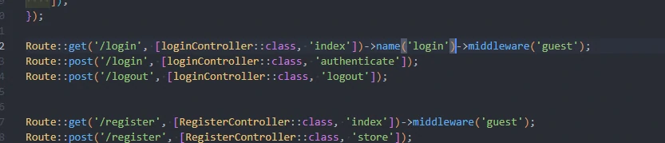

User Login & Middleware
- buka docukemtasi
- sebetulnya laravel menyediakan starter kits
- jadi ada plugin / apk yang khusus menangani masalah otentifikasi
- ada laravel Breeze & laravel jet strim : dengan itu bisa dengan mudah menangani masalah
autentifikasi dari registrasi user, login, dan verifikasi lewat email, remember me, forgot password
- tapi kita akan membuat secara manual
- kalo tidak pakai apk stater kits, tidak usah khawatir laravel punya sebuah authentifikasi service
lewat facade
- facade : library didalam laravel auth
kita perbaiki view login
- buka file login/index.blade.php
- buka file web.php
- buka file LoginController.php
- buka file login/index.blade.php untuk memberi feedback ketika gagal
- kita melakukan regenerate pada session karena : untuk menghindari sebuah teknik hacking yang namanya
session fixation
- session fixation : bagaimana cara seseorang untuk masuk ke celah sistem menggunakan session
- intanded : sebuah method yang disediakan laravel yang akan melakukan redirect user ke tempat /
URL sebelum melewati authentication middleware.
- buka file LoginController.php

- buka file login/index.blade.php
membuat dashboard
- buat controller dashboard
- tambah method di dashboardController
- buat folder dashboard dan file didalamnya index.blade.php
- kita bikin route
Middleware
- middleware menyediakan sebuah mekanisme yang memudahkan kita untuk melakukan inspeksi dan filtering
HTTP request
- contohnya, laravel sudah menyetakan sebuah middleware didalamnya yang melakukan verifikasi apakah
seorang user dari apk kita sudah terauthentication / belum
- jika belum middleware akan melakukan redirect user tadi kehalaman login / halaman yang kita inginkan
- tapi kalo sudah terauthentication, middleware akan memperbolehkan kita untuk lanjut masuk kedalam
apknya.
- secara default laravel sudah banyak middleware yang otomatis jalan
- ada yang namanya global middleware
- ada middleware yang sudah otomatis jalan setiap request HTTP kita dijalankan, adanya di
app/Http/kernel.php
- buka file web.php
- guest untuk user yang belum login, jika sudah login maka akan ditolak
- kita atur agar tidak mengarah ke home
- buka file app/providers/RouteServiceProvider.php
kita hilangkan navbar tombol login ketika sudah login
- kita ambil navbar dropdown dari boostrap
- buka file navbar.blade.php
- untuk logout kita harus pakai form
- kita atur route web.php
- kita atur controller loginnya
- cara logout kita cari di authentication

- buka file LoginController.php
perbaiki dashboard
kita ubah route login
- kita jalankan akan error
- buka file app/Http/Middleware/Authenticate.php
- default: kalo misal ada user yang tidak terauthenticasi berusaha masuk ke halaman yang authenticasi
redirect dia ke route yang namanya login
- route bisa kita kasih nama : name route
- jadi kita kasih tau di web.php kita mana route login
